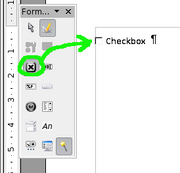

Ein wesentlicher Bestandteil des WollMux sind die sog. "WollMux-Kommandos", die Sie in OOo-Dokumente integrieren können. Die Kommandos sorgen dafür, dass die Inhalte (z.B. Absenderdaten), die der WollMux bereitstellt in das Zieldokument eingefügt werden.
- WollMux-Kommandos
- WollMux-Kommandos in Dokumenten und Textfragmenten verwenden
- Globale Dokumentkommandos
- Kommandos des Briefkopfsystems
- Kommandos des Formularsystems
- Seriendruckfelder
- Textbereiche mit der Namenserweiterung GROUPS <Liste_mit_Sichtbarkeitsgruppen>
- Seitenvorlage Wollmuxseite
- WollMux-Metadaten im Dokument
- Beschreibung der Formular-GUI
WollMux-Kommandos
Ein WollMux-Kommando ist ein benanntes Bookmark (eine Textmarke), wobei der Name des Bookmarks zugleich das Kommando enthält. Ein WollMux-Kommando hat folgenden Aufbau:
WM(CMD '<kommando>' <ARGUMENT_1> '<foo1>' ... <ARGUMENT_N> '<fooN>')<nummer>
Die Syntax der WM-Kommandos richtet sich nach dem Format von WollMux-Config-Dateien. Jedes WollMux-Kommando beginnt mit dem Schüsselwort "WM" und ist von runden Klammern umgeben. Innerhalb der Klammer werden folgende Schlüssel-Wert-Paare akzeptiert:
CMD: Der Schlüssel CMD
<ARGUMENT_1..N>: Jedes Kommando kann benannte Parameter wie z.B. den FRAG_ID besitzen. Die benötigten Argumente werden mit den einzelnen Kommandos individuell festgelegt.
Da Bookmarks eindeutig sein müssen, ist an jedes Kommando, das bereits
in der exakt selben Schreibweise definiert worden ist eine natürliche
Zahl <nummer> anzuhängen. Die Zahl wird bei unterschiedlich
geschriebenen Kommandos nicht benötigt.
WollMux-Kommandos in Dokumenten und Textfragmenten verwenden
Sowohl Dokumente als auch Textfragmente können WollMux-Kommandos enthalten. Ein Beispiel zur Verwendung der WollMux-Kommandos ist unter Textfragmente im WollMux enthalten.
Globale Dokumentkommandos
Die folgenden Dokumentkommandos werden unabhängig vom Dokumenttyp (z.B. Vorlage oder Dokument) immer beachtet.
Das Kommando "setType"
Über das Kommando 'setType' kann der Typ eines Dokuments oder einer Vorlage fest vorgegeben werden. Enthält ein Dokument oder eine Vorlage dieses Kommando, so hat diese Festlegung Vorrang vor der automatischen Dokumenterkennung (siehe Verhalten der Dateiendungen .odt und .ott).
Das Kommando WM(CMD 'setType' TYPE 'normalTemplate')
Syntax:
WM(CMD 'setType' TYPE 'normalTemplate')
Über dieses Kommando können Sie festlegen, dass ein Dokument wie eine Vorlage behandelt wird, auch dann, wenn das Dokument die Dateiendung .odt besitzt. Nach dem Öffnen eines Dokuments oder einer Vorlage, die dieses Kommando enthält, wird der WollMux veranlasst, auch die evtl. weiteren im Dokument enthaltenen Dokumentkommandos auszuführen. Auf diese Weise wird erreicht, dass das so erzeugte Dokument nach dem Speichern nicht wieder als Vorlage, sondern als normales Dokument betrachtet wird.
Gültigkeitsbereich und Lebensdauer: Bei Erzeugen eines Dokuments aus einer Vorlage, Vorlage bearbeiten und Dokument öffnen wird das WollMux-Kommando 'setType' einmalig ausgeführt. Der Typ wird festgelegt und danach wird das WollMux-Kommando gelöscht. Bei einem Fehler wird eine Fehlermeldung angezeigt und das WollMux-Kommando wird nicht gelöscht.
Praktischer Anwendungsbereich: Öffnen eines Dokuments aus dem Dokumenten Management System (DMS). Manche Dokumente des DMS sollen wie Vorlagen behandelt werden, obwohl sie aus technischen Gründen nur als .odt abgespeichert werden können. Um dies zu erreichen wird das der Typ 'normalTemplate' gesetzt.
Das Kommando WM(CMD 'setType' TYPE 'templateTemplate')
Syntax:
WM(CMD 'setType' TYPE 'templateTemplate')
Über dieses Kommando können Sie steuern, dass ein Vorlage als "Vorlage für eine Vorlage" betrachtet wird. D.h. Die Vorlage wird als Vorlage geöffnet, die enthaltenen Dokumentkommandos werden jedoch nicht ausgeführt.
Auf diese Weise können Sie eine Vorlage erstellen, die als Vorlage für eine neue WollMux-Vorlage benutzt werden kann, ohne dass die in Ihr enthaltenen Dokumentkommandos sofort ausgeführt werden. Nach der Erstellung der Vorlage, d.h. nach dem ersten Abspeichern, kann die Vorlage als vollwertige WollMux-Vorlage benutzt werden, bei der auch (erwartungsgemäß) die enthaltenen Dokumentkommandos interpretiert werden.
Gültigkeitsbereich und Lebensdauer: Beim Erzeugen eines Dokuments aus einer Vorlage wird das WollMux-Kommando 'setType' TYPE 'templateTemplate' einmalig ausgeführt. Der Typ wird geändert, danach wird das WollMux-Kommando gelöscht. Das Kommando wird nicht entfernt, wenn die Vorlage im Modus "Vorlage bearbeiten" geöffnet wurde. Bei einem Fehler erscheint eine Fehlermeldung, das WollMux-Kommando wird nicht gelöscht.
Praktischer Anwendungsbereich: Mischvorlagen sind Vorlagen, die jedoch nicht sofort vom WollMux behandelt werden sollen. Erst wenn die Vorlagenerstellerin oder der Vorlagenersteller durch Anpassung der Mischvorlage eine "richtige" Vorlage erzeugt und als
Das Kommando WM(CMD 'setType' TYPE 'formDocument')
Syntax:
WM(CMD 'setType' TYPE 'formDocument')
Über dieses Kommando können Sie steuern, dass ein Dokument als "Dokument mit Formularfunktionalität" behandelt wird. D.h. außer den Kommandos des Formularsystems werden keine Dokumentkommandos interpretiert. Nur die grafische Oberfläche des Formularsystems wird angezeigt, der WollMux lässt das Dokument sonst unverändert.
Gültigkeitsbereich und Lebensdauer: Die Textmarke 'setType' TYPE 'formDocument' wird zwar bei Dokument öffnen, Dokument aus einer Vorlage erzeugen und Vorlage bearbeiten gelöscht, die Information wird aber als Notiz 'SetType' beginnend mit 'formDocument' abgelegt. Dadurch wird erreicht, dass ein Formular-Dokument immer als Formular-Dokument betrachtet wird.
Praktischer Anwendungsbereich: Bei den sog. WollMux-Formularen möchte man erreichen, dass die Formulare auch nach dem Speichern (als .odt) wieder als "Formulardokumente" behandelt werden. D.h. der WollMux öffnet zusätzlich zum Formulardokument den Formulardialog und zeigt ihn links neben diesem an.
Das Kommando "setPrintFunction"
Syntax:
WM(CMD 'setPrintFunction' FUNCTION '')
In jedem Dokument können Druckfunktionen festgelegt werden, die beim
Drucken ausgeführt werden sollen. Dieses Kommando nimmt die
Druckfunktion
Gültigkeitsbereich und Lebensdauer: Die Textmarke setPrintFunction wird direkt nach dem Öffnen des Dokuments bzw. der Vorlage gelöscht, dabei aber dauerhaft in die Notiz 'PrintFunction' übertragen. Dadurch wird erreicht, dass beim Drucken immer diese Druckfunktion ausgeführt wird.
Das Kommando "insertFormValue"
Syntax:
WM(CMD 'insertFormValue' ID '<feldId>')
WM(CMD 'insertFormValue' ID '<feldId>' TRAFO '<Funktionsbezeichner>')
Beschreibung: Dieses Kommando erzeugt an der Stelle des Bookmarks einen OpenOffice-Feldbefehl vom Typ Eingabefeld (siehe auch Einfügen→Feldbefehl→Funktionen/Eingabefeld) und befüllt es stets mit dem Inhalt des Formularfeldes, das den eindeutigen Bezeichner ID besitzt. Falls schon Eingabefelder,Checkboxen,Dropdownfelder oder Datenbankfelder vorhanden sind, werden diese verwendet.
Gültigkeitsbereich und Lebensdauer: Das Kommando 'insertFormValue' ist automatisch bei Vorlagen, Dokumenten und Formulardokumenten aktiv und kann über die FormGUI, über den Seriendruckmechanismus (WollMux) und über den Empfägerauswahl-Dialog gefüllt werden.
Datenbankfelder, die über den Datenquellenbrowser (Ansicht/Datenquellen) bzw. über Einfügen/Feldbefehl/Andere.../Datenbank/Seriendruck-Feld eingefügt wurden, werden vom WollMux behandelt als wären es insertFormValue-Kommandos. Als ID wird der Spaltenname herangezogen.
ID (eindeutiger Bezeichner des Formularfeldes)
ID beschreibt den eindeutigen Bezeichner des Formularfeldes, dessen Inhalt in das Formular eingefügt werden soll. Das entsprechende Formularfeld muss in der Formularbeschreibung des Formulars definiert sein.
Beispiel: Sie haben in Ihrer Formularbeschreibung das Formularfeld (eine
Combobox) mit der ID "Anrede" definiert.
WM(
Formular(
TITLE "Testformular"
Fenster(
Empfaenger(
TITLE "Empfänger"
CLOSEACTION "abort"
Eingabefelder(
(LABEL "Anrede" TYPE "combobox" VALUES ("Herr", "Frau") '''ID "Anrede" '''
EDIT "true" AUTOFILL "Frau"'''
)
)
)
)
)
)
Um den Wert dieses Formularfeldes ins Dokument einzufügen, benötigen Sie folgendes Dokumentkommando:
WM(CMD 'insertFormValue' ID 'Anrede')
TRAFO <Funktionsbezeichner>
Als <Funktionsbezeichner> kann der Name einer Funktion angebeben werden,
der in einem Abschnitt
Funktionen
entweder in der globalen Konfigurationsdatei wollmux.conf oder in der
Formularbeschreibung
einer Vorlage definiert ist. Anstelle des Wertes, der im Formularfeld
steht wird dann der Rückgabewert der Funktion eingefügt. Erwartet die
Trafofunktion einen oder mehrere Parameter, so wird für alle Parameter
der untransformierte Wert des durch ID spezifizierten Formularfeldes
übergeben.
Beispiel: Der Wert des Formularfeldes mit der ID "Anrede" soll verwendet werden, um im Dokument das Wort "geehrte" bzw. "geehrter" automatisch einzutragen. Dies können Sie wie folgt realisieren:
Sie definieren eine Funktion mit der ID "Geehrter", die abhängig vom Geschlecht das entsprechende Wort "geehrte" bzw. "geehrter" zurückliefert. Die Definition der Funktion erfolgt in diesem Fall in der globalen Konfigurationsdatei wollmux.conf, da die Funktion dann auch aus anderen Vorlagen heraus verwendet werden kann. Die benötigte Definition könnte wie folgt aussehen:
[...]
Funktionen(
Geehrter(IF(MATCH(VALUE'Anrede', "Frau") THEN "geehrte" ELSE "geehrter"))
)
[...]
Um nun die Transformation anwenden zu können, benötigen Sie nur noch das entsprechende insertFormValue-Kommando im Dokument. Dieses würde wie folgt lauten:
WM(CMD 'insertFormValue' ID 'Anrede' TRAFO 'Geehrter')
Vordefinierte Eingabe- oder Formularfelder in der Vorlage
Es ist auch möglich, das Eingabefeld bereits in der Vorlage zu definieren und nicht erst vom "insertFormValue"-Kommando generieren zu lassen. In diesem Fall wird das bereits bestehende Eingabefeld der Vorlage verwendet und kein neues Eingabefeld erzeugt. Das entsprechende Eingabefeld muss dazu jedoch vollständig vom Bookmark des insertFormValue-Kommandos umschlossen sein.
Dabei ist es auch möglich, Eingabefelder vom Typ "Eingabeliste" im Dokument zu definieren, die über den Menüpunkt "Einfügen→Feldbefehl→Andere.../Funktionen/Eingabeliste" in das Dokument eingefügt werden können.

Als eine besondere Form von Eingabefeldern zur Darstellung der Formularwerte werden dabei auch Checkboxen unterstützt, die sie über "Ansicht→Symbolleisten→Formular-Steuerelemente" und dem Auswählen eines Formularelements vom Typ Checkbox in Ihre Vorlage einfügen können. Auch hier gilt: Findet der WollMux diese Combobox umschlossen von einem "insertFormValue"-Kommando, so wird diese Combobox zur Darstellung des Formularwertes verwendet. Dabei greift folgende Abbildung:
- Der String "true" wird immer auf ein gesetztes Häckchen in der Combobox abgebildet.
- alle anderen Strings (und damit auch "false") werden auf ein nicht gesetztes Häckchen abgebildet.
Das Kommado "draftOnly"
Syntax:
WM(CMD 'draftOnly')
WM(CMD 'draftOnly' HIGHLIGHT_COLOR '<farbe>')
Beschreibung: Die Marke markiert einen Bereich der nur im Entwurf gedruckt wird. Die Marke wird auch über die OOo-Writer Symbolleiste "Sachleitende Verfügungen (WollMux)" Button "Nur Entwurf" gesetzt.
Das Attribut HIGHLIGHT_COLOR '<farbe>': Das Attribut HIGHLIGHT_COLOR wird vom WollMux automatisch in das zugehörigen Dokumentkommando gesetzt, wenn die Schaltflächen zur Drucksteuerung einzelner Blöcke betätigt werden und im Abschnitt SachleitendeVerfuegungen der Konfigurationsdatei entsprechende Farben hinterlegt sind. Das Attribut markiert einen Druckblock, der mit einer Hintergrundfarbe versehen ist und wird dann verwendet, wenn ein Dokument mit Sachleitenden Verfügungen gedruckt wird. Vor dem Druckvorgang hebt der WollMux dabei alle farblichen Markieren der Druckblöcke auf (falls Farben gesetzt wurden) und stellt sie nach dem Druckvorgang wieder her in dem er den Wert von HIGHLIGHT_COLOR liest und auf den entsprechenden Bereich als Hintergrundfarbe anwendet. Die Farbe
Gültigkeitsbereich und Lebensdauer: Das Kommando "draftOnly" wird beim Drucken eines geöffneten Dokuments, einer geöffneten Vorlage und einer zur Bearbeitung geöffneten Vorlage mit Sachleitende Verfügungen ausgeführt. Gelöscht wird das Kommando über OOo-Writer Symbolleiste "Sachleitende Verfügungen (WollMux)" Button "Nur Entwurf".
Die Kommandos "draftOnly", "notInOriginal", "originalOnly", "copyOnly" und "allVersions" dienen zur Drucksteuerung der Sachleitenden Verfügungen und sollten nicht händisch durch das Einfügen entsprechender Textmarken erzeugt werden, sondern über die Schaltflächen zur Drucksteuerung, die in der Symbolleiste 'Sachleitende Verfügungen' enthalten sind.
Das Kommando "notInOriginal"
Syntax:
WM(CMD 'notInOriginal')
WM(CMD 'notInOriginal' HIGHLIGHT_COLOR '<farbe>')
Beschreibung: Diese Marke markiert einen Bereich der ausser im Original, immer gedruckt wird. Die Marke wird auch über die OOo-Writer Symbolleiste "Sachleitende Verfügungen (WollMux)" Button "Nicht im Orginal" gesetzt. Im Falle von internen Schreiben entspricht das Original dem Ausdruck, der nur den ersten Verfügungspunkt (ohne die Ziffer "I.") enthält.
Das Attribut HIGHLIGHT_COLOR '<farbe>': Das Attribut HIGHLIGHT_COLOR ist im Abschnitt des Dokumentkommandos draftOnly beschrieben.
Gültigkeitsbereich und Lebensdauer: Das Kommando "notInOriginal" wird beim Drucken eines geöffneten Dokuments, einer geöffneten Vorlage und einer zur Bearbeitung geöffneten Vorlage mit Sachleitende Verfügungen ausgeführt. Gelöscht wird das Kommando über OOo-Writer Symbolleiste "Sachleitende Verfügungen (WollMux)" Button "Nicht im Original".
Achtung: Die Kommandos "draftOnly", "notInOriginal", "originalOnly", "copyOnly" und "allVersions" dienen zur Drucksteuerung der Sachleitenden Verfügungen und sollten nicht händisch durch das Einfügen entsprechender Textmarken erzeugt werden, sondern über die Schaltflächen zur Drucksteuerung, die in der Symbolleiste 'Sachleitende Verfügungen' enthalten sind.
Das Kommando "originalOnly"
Syntax:
WM(CMD 'originalOnly')
WM(CMD 'originalOnly' HIGHLIGHT_COLOR '<farbe>')
Beschreibung: Diese Marke markiert einen Bereich der ausschließlich im Original gedruckt wird. Die Marke wird auch über die OOo-Writer Symbolleiste "Sachleitende Verfügungen (WollMux)" Button "Nur Original" gesetzt. Im Falle von internen Schreiben entspricht das Original dem Ausdruck, der nur den ersten Verfügungspunkt (ohne die Ziffer "I.") enthält.
Das Attribut HIGHLIGHT_COLOR '<farbe>': Das Attribut HIGHLIGHT_COLOR ist im Abschnitt des Dokumentkommandos draftOnly beschrieben.
Gültigkeitsbereich und Lebensdauer: Das Kommando "originalOnly" wird beim Drucken eines geöffneten Dokuments, einer geöffneten Vorlage und einer zur Bearbeitung geöffneten Vorlage mit Sachleitende Verfügungen ausgeführt. Gelöscht wird das Kommando über OOo-Writer Symbolleiste "Sachleitende Verfügungen (WollMux)" Button "Nur Original".
Achtung: Die Kommandos "draftOnly", "notInOriginal", "originalOnly", "copyOnly" und "allVersions" dienen zur Drucksteuerung der Sachleitenden Verfügungen und sollten nicht händisch durch das Einfügen entsprechender Textmarken erzeugt werden, sondern über die Schaltflächen zur Drucksteuerung, die in der Symbolleiste 'Sachleitende Verfügungen' enthalten sind.
Das Kommando "copyOnly"
Syntax:
WM(CMD 'copyOnly')
WM(CMD 'copyOnly' HIGHLIGHT_COLOR '<farbe>')
Beschreibung: Diese Marke markiert einen Bereich der ausschließlich in Abdrucken (das sind alle Ausdrucke außer dem Original und dem Entwurf) gedruckt wird. Die Marke wird auch über die OOo-Writer Symbolleiste "Sachleitende Verfügungen (WollMux)" Button "Nur Abdrucke" gesetzt.
Das Attribut HIGHLIGHT_COLOR '<farbe>': Das Attribut HIGHLIGHT_COLOR ist im Abschnitt des Dokumentkommandos draftOnly beschrieben.
Gültigkeitsbereich und Lebensdauer: Das Kommando "copyOnly" wird beim Drucken eines geöffneten Dokuments, einer geöffneten Vorlage und einer zur Bearbeitung geöffneten Vorlage mit Sachleitende Verfügungen ausgeführt. Gelöscht wird das Kommando über OOo-Writer Symbolleiste "Sachleitende Verfügungen (WollMux)" Button "Nur Abdrucke".
Achtung: Die Kommandos "draftOnly", "notInOriginal", "originalOnly", "copyOnly" und "allVersions" dienen zur Drucksteuerung der Sachleitenden Verfügungen und sollten nicht händisch durch das Einfügen entsprechender Textmarken erzeugt werden, sondern über die Schaltflächen zur Drucksteuerung, die in der Symbolleiste 'Sachleitende Verfügungen' enthalten sind.
Das Kommando "allVersions"
Syntax:
WM(CMD 'allVersions')
WM(CMD 'allVersions' HIGHLIGHT_COLOR '')
Beschreibung: Diese Marke markiert einen Bereich der immer gedruckt wird. Die Marke wird auch über die OOo-Writer Symbolleiste "Sachleitende Verfügungen (WollMux)" Button "Immer drucken" gesetzt.
Das Attribut HIGHLIGHT_COLOR '<farbe>': Das Attribut HIGHLIGHT_COLOR ist im Abschnitt des Dokumentkommandos draftOnly beschrieben.
Gültigkeitsbereich und Lebensdauer: Das Kommando "allVersion" wird beim Drucken eines geöffneten Dokuments, einer geöffneten Vorlage und einer zur Bearbeitung geöffneten Vorlage mit Sachleitende Verfügungen ausgeführt. Gelöscht wird das Kommando über OOo-Writer Symbolleiste "Sachleitende Verfügungen (WollMux)" Button "Immer drucken".
Achtung: Die Kommandos "draftOnly", "notInOriginal", "originalOnly", "copyOnly" und "allVersions" dienen zur Drucksteuerung der Sachleitenden Verfügungen und sollten nicht händisch durch das Einfügen entsprechender Textmarken erzeugt werden, sondern über die Schaltflächen zur Drucksteuerung, die in der Symbolleiste 'Sachleitende Verfügungen' enthalten sind.
Kommandos des Briefkopfsystems
Die Briefkopfkomponente des WollMux unterstützt folgende Kommandos:
Das Kommando "insertFrag"
Syntax:
WM(CMD 'insertFrag' FRAG_ID '<fragment_id>')
WM(CMD 'insertFrag' FRAG_ID '<fragment_id>' STYLES ('<style1>' , '<style2>', '<styleN>'))
WM(CMD 'insertFrag' FRAG_ID '<fragment_id>' ARGS('<arg1>', '<arg2>', '<argN>'))
WM(CMD 'insertFrag' FRAG_ID '<fragment_id>' ARGS('<arg1>', '<arg2>', '<argN>') MODE '<modus>')
Beschreibung: Fügt das in der Konfigurationsdatei unter
Gültigkeitsbereich und Lebensdauer: Das Fragment mit der FRAG_ID '
Löschen von leeren Absätzen: Nach dem Einfügen eines Textfragmentes wird der erste und/oder der letzte Absatz des eingefügten Textfragments gelöscht, wenn diese Absätze leer sind. Enthält das Textfragment überhaupt keinen Textinhalt und ist es das einzige Element in einem Absatz, so wird der Absatz nach der Ausführung des Kommandos gelöscht.
Welche Absatzformate werden wann verwendet?: Bitte beachten Sie hierzu den Abschnitt Übernahme von Absatzformaten beim Einfügen von Textfragmenten in dem festgelegt ist, in welchem Fall welche Absatzformate verwendet werden.
Wenn Sie in ihren Textfragmenten Textfelder von OpenOffice verwenden,
beachten Sie bitte auch das Kommando WM(CMD 'updateFields').
Das optionale Attribut ARGS
Optional können beim Einfügen des Textfragments über das Attribut ARGS Argumente (<arg1-N>) übergeben werden, die im Textfragement bestehende Platzhalterfelder ersetzt. Die Platzhalterfelder werden in der Reihenfolge der Argumente ersetzt.
Das optionale Attribut MODE
Das Attribut MODE ist optional und kann die Werte "auto" und "manual" annehmen. Ist MODE nicht angegeben, so wird standardmäßig der Wert "auto" verwendet.
auto: Im Modus "auto" wird das Textfragment automatisch mit dem Öffnen der Vorlage eingefügt. Dabei findet eine Prüfung statt, ob sich ein Textfragment direkt oder indirekt selbst aufruft und damit beim Einfügen eine Endlosschleife entstehen würde. Alle Fehler, die beim Einfügen entstehen können, werden in Notizen hinterlegt, die mit dem roten Text "<Fehler []>" gekennzeichnet sind (normales Fehlerverhalten).
manual: Der Modus "manual" kennzeichnet Einfügungen, die manuell (z.B. durch Einfügen eines Textbausteines) vorgenommen worden sind. Im Modus "manual" gibt es folgende Abweichungen vom Modus "auto":
- Es findet keine Prüfung statt, ob sich ein Textfragment direkt oder indirekt selbst aufruft und damit eine Endlosschleife verursachen würde.
- Treten beim Einfügen Fehler irgend einer Art auf, so werden diese Fehler in eigenständigen Fehlerdialogen angezeigt und nicht wie im Modus "auto" über die rot markierten "<Fehler []>" Hinweise im Dokument.
- Sind mehr Argumente angeben als Einfügestellen (Platzhalter) im Dokument vorhanden sind, so erscheint eine Warnmeldung.
Das optionale Attribut STYLES
Ist das Attribut STYLES angegeben, so werden nur die Formatvorlagen importiert, die im Textfragment definiert sind, nicht jedoch die Textinhalte des Fragments. Im aktuellen Dokument befindliche Formatvorlagen werden dabei von den Formatvorlagen des Textfragments überschrieben. Über die übergebenen Liste <style1>, ..., <styleN> lässt sich die Auswahl der zu importierenden Formatvorlagen einschränken. Für <style1>, ..., <styleN> kommen folgende Werte in Frage:
All: importiert alle für die Textverarbeitung notwendigen Formatvorlagen des Fragments, d.h. TextStyles, PageStyles und NumberingStyles. TextStyles: importiert nur die Absatz- und Zeichenformate des Textfragments PageStyles: importiert nur die Seitenformate des Textfragments NumberingStyles: importiert nur die Formate der Nummerierungen und Aufzählungen.
Beispiel 1:
WM(CMD 'insertFrag' FRAG_ID 'Formate' STYLES 'All')
Alle für die Textverarbeitung notwendigen Formate werden aus dem Fragment 'Formate' importiert: Die Absatz- und Zeichenformate, die Seitenformate und die Formate für Nummerierung und Aufzählungen. Die Textinhalte werden dabei nicht übernommen.
Beispiel 2:
WM(CMD 'insertFrag' FRAG_ID 'Formate' STYLES ('TextStyles' 'NumberingStyles'))
Im diesem Beispiel werden nur die Absatz- und Zeichenformate und die Nummerierungs- und Aufzählungsformate aus dem Textfragment 'Formate' importiert. Die Textinhalte und die Seitenformate werden nicht übernommen.
Das Kommando "overrideFrag"
Syntax:
WM(CMD 'overrideFrag' FRAG_ID '<alte_fragment_id>' NEW_FRAG_ID '<neue_fragment_id>')
WM(CMD 'overrideFrag' FRAG_ID '<fragment_id>')
Beschreibung: Überschreiben von FRAG_IDs: Dieses Kommando sorgt dafuer, dass alle im selben Dokument enthaltenen insertFrag- und insertContent-Befehle, die normalerweise das Textfragment <alte_fragment_id> reinziehen würden, stattdessen das Textfragment
Das Attribut FRAG_ID: Das Attribut FRAG_ID enthält den Namen des Textfragmentes, das innerhalb dieses Dokuments umdefiniert werden soll. Das Attribut FRAG_ID muss immer angegeben werden.
Das optionale Attribut NEW_FRAG_ID: Das optionale Attribut NEW_FRAG_ID enthält den neuen FRAG_ID-Namen, der an Stelle des alten FRAG_ID-Names verwendet werden soll. Ist das Attribut nicht vorhanden oder enthält es einen leeren String, so wird an Stelle des ursprünglich einzufügenden Textfragments gar kein Textfragment eingefügt und der Inhalt unter dem Dokumentkommando gelöscht.
Gültigkeitsbereich und Lebensdauer: Das Kommando wird beim Erzeugen eines Dokuments aus einer Vorlage ausgewertet und danach gelöscht. Es kann sowohl in der Hauptvorlage (die Vorlage, die auch über den Dateimanager oder die WollMuxLeiste geöffnet wurde) als auch in (Unter-)Fragmenten verwendet werden. Dabei enthält die Festlegung in der Hauptvorlage stets Vorrang vor allen Festlegungen, die in untergeordneten Fragmenten enthalten sind. Generell gilt: Das zuerst gelesene overrideFrag-Kommando hat Vorrang vor den später gelesenen override-Kommandos.
Ersetzungsketten: Es ist theoretisch möglich durch zwei oder mehrere overrideFrag-Kommandos Ersetzungsketten zu bilden. Beispiel:
WM(CMD 'overrideFrag' FRAG_ID 'A' NEW_FRAG_ID 'B')
WM(CMD 'overrideFrag' FRAG_ID 'B' NEW_FRAG_ID 'C') <-- FEHLER
Das Fragment A wird im ersten Kommando durch B überschrieben. Jetzt wird
aber im nächsten Kommando auch das Fragment B durch C überschrieben.
Wenn nun im Dokument ein Kommando WM(CMD 'insertFrag' FRAG_ID 'A')
vorkommt, welches Fragment soll dann tatsächlich eingefügt werden? B
oder C? Da bislang kein praktischer Anwendungsfall für Ersetzungsketten
bekannt ist, wurde dies noch nicht spezifiziert. Um mögliche Probleme zu
vermeiden, wird daher bei der Ausführung des zweiten Kommandos ein
Fehler gemeldet. Sollten Sie einen praktischen Anwendungsfall haben, für
den Sie Ersetzungsketten benötigen, stellen Sie bitte einen
Änderungsantrag mit dem gewünschten Verhalten.
Das Kommando "updateFields"
Syntax:
WM(CMD 'updateFields')
Beschreibung: Beim Einfügen von Textfragmenten, die Textfelder (z.B. das Datum-Feld) enthalten, werden diese Textfelder nicht automatisch von OpenOffice aktualisiert. Dieses Verhalten ist besonders bei der Erzeugung neuer Dokumente unerwünscht, da die Textfelder in diesem Fall natürlich den aktuellen Stand repräsentieren sollen. Das Kommando "updateFields" kann um ein oder mehrere solcher Textfelder gelegt werden und sorgt dafür, dass die enthaltenen Textfelder aktualisiert werden.
Gültigkeitsbereich und Lebensdauer: Beim Erzeugen eines Dokuments aus einer Vorlage wird das WollMux-Kommando 'updateFields' einmalig ausgeführt. Die Felder werden aktualisiert und danach wird das WollMux-Kommando gelöscht. Damit ist sicher gestellt, dass z.B. das Feld "Datum Fix" nur genau ein mal, nämlich zur Dokumenterstellung aktualisiert wird und danach unverändert bleibt.
Das Kommando "insertValue"
Syntax:
WM(CMD 'insertValue' DB_SPALTE '<spaltenname>')
WM(CMD 'insertValue' DB_SPALTE '<spaltenname>' AUTOSEP '<left/right/both>' SEPARATOR '<sep>' [...])
WM(CMD 'insertValue' DB_SPALTE '<spaltenname>' TRAFO '<Funktionsbezeichner>')
Beschreibung: Fügt das Datenfeld <spaltenname> des aktuellen Absenders in das Dokument ein.
Gültigkeitsbereich und Lebensdauer: Beim Erzeugen eines Dokuments aus einer Vorlage wird das WollMux-Kommando 'insertValue' einmalig ausgeführt. Das Datenfeld wird eingefügt und danach wird das WollMux-Kommando gelöscht. Bei einem Fehler wird eine Fehlermeldung angezeigt und das WollMux-Kommando wird nicht gelöscht.
Verwendete Felder aus dem LDAP
Nachstehende Liste ist aus der datenquellen.conf übernommen und zeigt
die Bezeichungen der LDAP Felder für den Wollmux. Wenn man also den
Nachnamen einfügen will, lautet der Befehl WM(CMD 'insertValue'
DB_SPALTE 'Nachname')
(DB_SPALTE "Vorname" PATH "0:givenName" OBJECT_CLASS "lhmPerson")
(DB_SPALTE "Nachname" PATH "0:sn" OBJECT_CLASS "lhmPerson")
(DB_SPALTE "Anrede" PATH "0:lhmTitle" OBJECT_CLASS "lhmPerson")
(DB_SPALTE "Titel" PATH "0:personalTitle" OBJECT_CLASS "lhmPerson")
(DB_SPALTE "Telefon" PATH "0:telephoneNumber" OBJECT_CLASS "lhmPerson")
(DB_SPALTE "OrgaTelefon" PATH "-1:telephoneNumber" OBJECT_CLASS "lhmOrganizationalUnit")
(DB_SPALTE "OrgaFax" PATH "-1:facsimileTelephoneNumber" OBJECT_CLASS "lhmOrganizationalUnit")
(DB_SPALTE "Fax" PATH "0:facsimileTelephoneNumber" OBJECT_CLASS "lhmPerson")
(DB_SPALTE "Zimmer" PATH "0:roomNumber" OBJECT_CLASS "lhmPerson")
(DB_SPALTE "Mail" PATH "0:mail" OBJECT_CLASS "lhmPerson")
(DB_SPALTE "DienstBezKurz" PATH "0:title" OBJECT_CLASS "lhmPerson")
(DB_SPALTE "Referat" PATH "3:lhmReferatName" OBJECT_CLASS "lhmOrganizationalUnit" LINE_SEPARATOR "%%%%")
(DB_SPALTE "OberOrga" PATH "4:lhmOULongname" OBJECT_CLASS "lhmOrganizationalUnit" LINE_SEPARATOR "%%%%")
(DB_SPALTE "OrgaName" PATH "-1:lhmDienststellenName" OBJECT_CLASS "lhmOrganizationalUnit")
(DB_SPALTE "OrgaKurz" PATH "-1:lhmOUShortname" OBJECT_CLASS "lhmOrganizationalUnit")
(DB_SPALTE "Rolle" PATH "-1:lhmOUShortname" OBJECT_CLASS "lhmOrganizationalUnit")
(DB_SPALTE "OrgaLang" PATH "-1:lhmOULongname" OBJECT_CLASS "lhmOrganizationalUnit" LINE_SEPARATOR "%%%%")
(DB_SPALTE "Postanschrift" PATH "0:street" OBJECT_CLASS "lhmPerson")
(DB_SPALTE "PostPLZ" PATH "0:postalCode" OBJECT_CLASS "lhmPerson")
(DB_SPALTE "PostOrt" PATH "0:l" OBJECT_CLASS "lhmPerson")
(DB_SPALTE "Dienstgebaeude" PATH "0:lhmOfficeStreetAddress" OBJECT_CLASS "lhmPerson")
(DB_SPALTE "DienstgebaeudePLZ" PATH "0:lhmOfficePostalCode" OBJECT_CLASS "lhmPerson")
(DB_SPALTE "DienstgebaeudeOrt" PATH "0:lhmOfficeLocalityName" OBJECT_CLASS "lhmPerson")
(DB_SPALTE "OrgaEmail" PATH "-1:mail" OBJECT_CLASS "lhmOrganizationalUnit")
(DB_SPALTE "OID" PATH "0:lhmObjectID" )
Die Attribute AUTOSEP bzw. SEPARATOR
Die Attribute AUTOSEP bzw. SEPARATOR sind optional und haben folgende Bedeutung: Falls der Spaltenwert in der Datenbank gesetzt ist und einen Inhalt zurückliefert (also nicht den Leerstring ""), besteht die Möglichkeit über AUTOSEP automatisch ein Trennzeichen vor oder nach dem Spaltenwert einfügen zu lassen.
- AUTOSEP bezeichnet dabei die Position, an der der Separator eingefügt wird und kann die Werte 'left', 'right' oder 'both' besitzen.
- Das Attribut SEPARATOR bezeichnet das Zeichen oder den String, der an dieser Position eingefügt werden soll. Ist das Attribut SEPARATOR nicht vorhanden, so wird per Voreinstellung ein Leerzeichen " " als Separator verwendet.
Eine sinnvolle Anwendung des AUTOSEP Attributs ist beispielsweise die Ausgabe des akademischen Titels im Briefkopf:
Herr Meier
Frau Dr. Mustermann
Im Briefkopf soll das Leerzeichen " " rechts neber dem "Dr." nur dann eingefügt werden, wenn die entsprechende Person den Doktortitel besitzt, ansonsten ist kein extra Leerzeichen einzufügen. Das dazugehörige Kommando sieht wie folgt aus:
WM(CMD 'insertValue' DB_SPALTE 'Titel' AUTOSEP 'right')
Da hier das Attribut SEPARATOR nicht angegeben wurde, wird die Standardeinstellung, das Leerzeichen, als Trenner verwendet.
In dem Kommando können prinzipiell mehrere AUTOSEP- und SEPARATOR-Paare angegeben werden um unterschiedliche Separatoren links bzw. rechts des Spaltenwerts einzustellen. Dazu ein Beispiel: Falls die Person einen akademischen Titel besitzt, soll der Spaltenwert in runde Klammern eingeschlossen und von einem Leerzeichen gefolgt werden. Das zugehörige Kommando würde wie folgt aussehen:
WM(CMD 'insertValue' DB_SPALTE 'Titel' AUTOSEP 'left' SEPARATOR '(' AUTOSEP 'right' SEPARATOR ') ')
Das Attribut TRAFO <Funktionsbezeichner>
Das Attribut TRAFO verhält sich genau wie das Attribut TRAFO
des Dokumentkommandos insertFormValue. Wird TRAFO jedoch im Zusammenhang
mit dem Dokumentkommando insertValue verwendet, kann der
Funktionsbezeichner <Funktionsbezeichner> ausschließlich der Name einer
globalen Funktion sein, d.h. einer Funktion die in wollmux.conf
definiert ist. Funktionen innerhalb dokumentspezifischer
Formularbeschreibungen können hier nicht angesprochen werden.
Beispiel: Das Attribut TRAFO kann hier z.B. verwendet werden, um über eine externe Funktion die im Briefkopf angezeigten Telefonnummern automatisch formatieren zu lassen. Die Konfigurationsdatei wollmux.conf enthält dazu folgenden Funktionen-Abschnitt:
Funktionen(
Telefonnummer(EXTERN(URL "java:de.muenchen.allg.itd51.wollmux.func.Standard.formatiereTelefonnummerDIN5008" PARAMS("nummer")))
)
Dabei verweist die URL "java:de.muenchen.allg.itd51.wollmux.func.Standard.formatiereTelefonnummerDIN5008" auf eine externe Java-Methode, die die Formatierung einer internen Telefonnummer gemäß DIN 5008 übernimmt. Das zugehörige insertValue-Dokumentkommando würde wie folgt aussehen:
WM(CMD 'insertValue' DB_SPALTE 'Telefon' TRAFO 'Telefonnummer')
Das Kommando "insertContent"
Syntax:
WM(CMD 'insertContent')
Beschreibung: Das Dokumentkommando insertContent ist ein Kommando zum Mischen von Textfragmenten. Das Kommando fügt den Inhalt eines weiteren Textfragments in eine über die WollMuxBar "Vorlagen und Formulare" geöffnete Vorlage ein. Das Kommando benötigt dazu eine Liste mit FRAG_ID-Attributen, die Sie in der Menübeschreibung der WollMuxBar festlegen können. Die exakte Funktionsweise von insertContent ist daher auch im Abschnitt Konfigurationsdatei wollmux.conf - Liste mit FRAG_ID-Attributen beschrieben.
Gültigkeitsbereich und Lebensdauer: Beim Erzeugen eines Dokuments aus einer Vorlage wird das WollMux-Kommando 'insertContent' einmalig ausgeführt. Der Inhalt eines weiteren Textfragment wird eingefügt und danach wird das WollMux-Kommando gelöscht.
Bitte beachten Sie auch den Abschnitt Übernahme von Absatzformaten beim Einfügen von Textfragmenten in dem festgelegt ist, in welchem Fall welche Absatzformate verwendet werden.
Das Kommando "setJumpMark"
Syntax:
WM(CMD 'setJumpMark')
Beschreibung: Diese Marke wird angesprungen, wenn nach dem Einfügen von Textbausteinen kein Platzhalter vorhanden ist. Die OOo-Writer Symbolleiste "Textbausteine" beinhaltet einen Button "Platzhalter anspringen" der den nächste Platzhalter, ab der aktuellen Cursorposition, anspringt. Falls kein Platzhalter vorhanden ist, aber eine Marke 'setJumpMark', wird diese angesprungen.
Gültigkeitsbereich und Lebensdauer: Bei Dokument öffnen, Vorlage öffnen und Vorlage bearbeiten wird falls vorhanden die Marke 'setJumpMark' über OOo-Writer Symbolleiste "Textbausteine" Button "Platzhalter anspringen" angesprungen. Die Marke wird beim ersten Ansprung gelöscht, so dass danach eine weitere Sprungmarke angesprungen wird, wenn sie im Dokument oder in der Vorlage vorhanden ist.
Beispiele
Im Beispiel wird davon ausgegangen, dass das Textfragment "test_a" in der Konfigurationsdatei wollmux.conf definiert wurde.
# Füge an die Stelle des Bookmarks den Inhalt aus dem Textfragment test_a ein`
WM(CMD 'insertFrag' FRAG_ID 'test_a')
# Hier wird der selbe Befehl wiederholt. Um die Bookmarks unterscheiden zu können,
# bekommt dieser den Suffix "1".
WM(CMD 'insertFrag' FRAG_ID 'test_a')1
# Füge an die Stelle des Bookmarks den Wert 'Anrede' aus dem aktuellen Absender-Datensatz ein.
WM(CMD 'insertValue' DB_SPALTE 'Anrede')
# Ein normales Bookmark wird vom WollMux ignoriert und bleibt unverändert.
NormalesBookmark13
Kommandos des Formularsystems
Das Kommando "setGroups"
Syntax:
WM(CMD 'setGroups' GROUPS '<groupId>')
WM(CMD 'setGroups' GROUPS ('<groupId1>' '<groupId2>' ...))
Beschreibung: Dieses Kommando dient dazu, Gruppen für Ein- und Ausblendungen zu definieren. Das setGroups-Kommando wird üblicherweise verwendet, um die Ein-/Ausblendegruppen eines Blocks zu definieren, der neben normalen Textelementen auch weitere Dokumentkommandos beinhalten kann. Auf den Schlüssel GROUPS folgt eine mit Leerzeichen separierte Liste mit Gruppen-IDs die diesem Kommando zugeordnet werden sollen. Jede Gruppe kann den Status "Sichtbar" oder "Ausgeblendet" enthalten, der von der Formular-GUI anhand der Regeln des Abschnitts "Sichtbarkeit" automatisch gesetzt wird. Der Textinhalt eines Dokumentkommandos wird nur dann sichtbar angezeigt, wenn alle Gruppen, die diesem Dokumentkommando zugeordnet sind den Status "Sichtbar" besitzen. Besitzt auch nur eine der zugeordneten Gruppen den Status "Ausgeblendet", so wird der Textinhalt des Dokumentkommandos ausgeblendet. Jedes setGroups-Kommando, das innerhalb eines anderen, umschließenden setGroups-Dokumentkommandos definiert ist, erbt dabei die Gruppenzugehörigkeit des umschließenden Dokumentkommandos.
Gültigkeitsbereich und Lebensdauer: Beim Erzeugen eines Dokuments aus einer Vorlage wird das Kommando 'setGroups' ausgeführt und definierte Gruppen werden ausgeblendet.
Beispiel:
Angenommen der Beispiel-Text ist wie folgt von Bookmarks mit Dokumentkommandos umgeben:
Dies ist ein Beispiel-Textabschnitt, in dem setGroups für Ein- und Ausblendungen definiert wurden.
<--------------------------- WM(CMD 'setGroups' GROUPS'a') -------------------------------------->
<--- WM(CMD 'setGroups' GROUPS('b' 'c')) ---->
in diesem Fall wäre der Textbereich "Dies ist ein Beispiel-Textabschnitt, in dem setGroups für Ein- und Ausblendungen definiert wurden." der Gruppe 'a' zugeordnet und der kleinere Teilbereich "Beispiel-Textabschnitt, in dem setGroups für E" den Gruppen 'a', 'b' und 'c' zugeordnet. Das Ausblenden der Gruppe 'a' führt dazu, dass der Gesamte Beispieltext ausgeblendet wird, wo hingegen das Ausblenden der Gruppen 'b' oder 'c' nur dazu führt, dass der Teilbereich ausgeblendet wird. Der Sichtbare Text würde z.B. nach dem Ausblenden der Gruppe 'b' lauten: "Dies ist ein in- und Ausblendungen definiert wurden.".
Performance:
Da SetGroups-Textmarken verschachtelt sein können, muss der WollMux alle SetGroups-Kommandos vor der Ausführung sortieren. Diese Sortierung kostet Zeit und kann abhängig von der Anzahl enthaltener SetGroups-Kommandos quadratisch steigene Ladezeiten hervorrufen. An allen Stellen, an denen eine Verschachtelung nicht zwingend notwendig ist, oder nur kleine Textbereiche verändert werden müssen, ist daher der Einsatz von InsertFormValue-Kommandos vorzuziehen - diese müssen nicht sortiert werden.
Ausblendung problematischer Inhalte:
Manche Textinhalte (wie z.B. Tabellen mit Rahmen und manuelle Seitenumbrüche) werden unter Verwendung der setGroups-Textmarken aufgrund eines Fehlers in OpenOffice.org nicht korrekt ausgeblendet. Als Lösung für solche problematischen Textinhalte wurden die Textbereiche mit der Namenserweiterung GROUPS eingeführt. Verpacken Sie problematische Inhalte in einen solchen Bereich und alle Inhalte werden fehlerfrei ausgeblendet. Textbereiche mit GROUPS-Namenserweiterung können beliebig mit SetGroups-Textmarken kombiniert und verschachtelt werden. Auch hier funktioniert die Vererbung von Gruppenzugehörigkeiten wie oben beschrieben.
Zusammenspiel mit den Hilfen für Sachleitende Verfügungen:
Das Kommando 'setGroups' ist nicht kompatibel mit den Hilfen für Sachleitende Verfügungen. Innerhalb von Textstellen, an denen bedingt durch Sachleitende Verfügungen oder deren Kommandos zur Drucksteuerung bestimmte Textteile aus- und wieder eingeblendet werden, dürfen setGroups-Kommandos nicht zum Einsatz kommen. Die Druckfunktion für Sachleitende Verfügungen nimmt keine Rücksicht auf die Sichtbarkeitszustände von setGroups-Kommandos und kann entsprechende Textbereiche beliebig sichtbar oder unsichtbar setzen.
Problemlos kann das setGroups-Kommando an Textstellen angewandt werden, die durch den Komfortdruck für Sachleitende Verfügungen unberührt bleiben, wie z.B. der gesamte Textbereich vor der Überschrift mit der Ziffer II.
Zur Darstellung variabler Inhalte innerhalb der kritischen Textstellen wird die Verwendung von InsertFormValue-Kommandos oder die Verwendung von Textbereichen mit der Namenserweiterung GROUPS empfohlen.
Das Kommando "form"
Syntax:
WM(CMD 'form')
Beschreibung: Dieses Kommando veranlasst den WollMux dazu, eine Formular-GUI zu der entsprechenden Vorlage bzw. zu dem Dokument zu öffnen. Das Bookmark mit diesem Kommando muss eine Notiz umschließen, die die Beschreibung der GUI gemäß dem Abschnitt "Beschreibung der Formular-GUI" enthält. Wenn möglich sollte statt dieses Kommandos die Notiz "WollMuxFormularbeschreibung" im Textrahmen "WollMuxDaten" verwendet werden.
Gültigkeitsbereich und Lebensdauer: Beim Erzeugen eines Dokuments aus einer Vorlage wird das Kommando 'form' ausgeführt und eine Formular-GUI wird geöffnet. Die Textmarke 'form' (sowie ihr gesamter Inhalt - also auch Text, der außer der Notiz von der Textmarke umschlossen ist) wird direkt nach dem Öffnen des Dokuments bzw. der Vorlage gelöscht, die Metadaten dabei aber dauerhaft in die die Notiz "WollMuxFormularbeschreibung" im Textrahmen "WollMuxDaten" übertragen.
Gültigkeitsbereich und Lebensdauer von Dokumentkommandos
| Gültig in folgenden Vorgängen | Lebensdauer | |||||
|---|---|---|---|---|---|---|
| Bestehendes Dokument bearbeiten | Dokument neu aus Vorlage erzeugen | Vorlage bearbeiten | Wird ausgeführt beim | Wird nach der Bearbeitung gelöscht | ||
| Globale Dokumentkommandos | ||||||
| setType | X | X | X |
|
X | |
| setPrintFunction | X | X | X |
|
X(1) | |
| insertFormValue | X | X | X |
|
||
| draftOnly | X | X | X |
|
||
| notInOriginal | X | X | X |
|
||
| allVersions | X | X | X |
|
||
| Briefkopfsystem | ||||||
| insertFrag | X |
|
X | |||
| updateFields | X |
|
X | |||
| insertContent | X |
|
X | |||
| setJumpMark | X |
|
X | |||
| Formularsystem | ||||||
| setGroup | X | X |
|
|||
| form | X |
|
X(1) | |||
| X(1) = Das Bookmark wird gelöscht, die zugehörigen Metadaten werden jedoch in den Rahmen 'WollMuxDaten' kopiert und bleiben damit erhalten. | ||||||
Seriendruckfelder
Über die Leiste "Seriendruck (WollMux)" können Felder für den Seriendruck in das Dokument eingefügt werden. Der WollMux unterscheidet die folgenden Felder:
Einfache Seriendruckfelder
Einfache Seriendruckfelder repräsentieren exakt den entsprechenden Wert zu einem Spaltennamen der Serienbriefdatenquelle oder den Wert einer Eingabe in der Formular-GUI. Transformationen werden von diesem Feld nicht unterstützt.
Abbildung einfacher Serienbrieffelder im Dokument:
Im Dokument werden einfache Serienbrieffelder durch Felder des Typs
com.sun.star.text.TextField.Database abgebildet, die auch im
OOo-Seriendruck Verwendung finden. Einfache Seriendruckfelder können
damit nicht nur über die Leiste "Seriendruck (WollMux)", sondern in OOo
auch über
Einfügen→Feldbefehl→Andere.../Datenbank/Seriendruck-Feld oder
über die Datenquellen-Ansicht (F4) eingefügt werden. Im Gegensatz zum
OOo-Seriendruck wertet der WollMux aber nicht die Angaben zur Datenbank
und des Tabellennamens aus, die in diesem Seriendruckfeld hinterlegt
sind. WollMux verwendet ausschließlich den Spaltennamen, der als dritte
Angabe in dem Seriendruckfeld hinterlegt ist. Die Auswahl der aktuellen
Tabelle erfolgt in der Seriendruckleiste des WollMux über das Bedienfeld
"Datenquelle".
Spezialfelder (InputUser)
Spezialfelder sind Felder, die bestehende Eingabedaten der Serienbriefdatenquelle oder der FormularGUI über eine definierte Logik transformieren können. Jedem Spezialfeld ist genau eine WollMux-Funktion zugeordnet, die zur Ausführung kommt, wenn sich der Wert der darin referenzierten Eingabedaten ändert.
Abbildung der Spezialfelder im Dokument:
Spezialfelder werden durch Felder vom Typ
com.sun.star.text.TextField.InputUser abgebildet, die in OOo auch über
Einfügen→Feldbefehl→Andere.../Variablen/Eingabefeld erzeugt
werden können. Diese Felder sind wie normale Eingabefelder bearbeitbar,
unterscheiden sich jedoch von normalen Eingabefeldern dadurch, dass sie
immer an ein sog. dokumentglobales Benutzerfeld gebunden sind. Im Namen
dieses Benutzerfeldes wird die Funktion hinterlegt, die dem Spezialfeld
zugeordnet ist. Der Name eines solchen Benutzerfeldes hat folgenden
Aufbau:
WM(FUNCTION '<Funktionsname>')
Anmerkung zu Benutzerfeldern: Benutzerfelder können in OOo über Einfügen→Feldbefehl→Andere.../Variablen/Benutzerfeld erzeugt werden. Entgegen der ODF-Spezifikation können in der Anwendungsoberfläche von OOo aber leider nur Namen für Benutzerfelder definiert werden, die ausschließlich Buchstaben und Ziffern enthalten. Ein Name nach dem obigen Aufbau kann über diesen Weg also nicht erzeugt werden, womit letztendlich auch die Erstellung von sinnvollen WollMux-Spezialfeldern nur über die Seriendruckleiste des WollMux möglich ist.
Beispiel:
Das Spezialfeld Wenn...Dann...Sonst... wird repräsentiert durch ein
InputUser-Feld und ein zugehöriges dokumentglobales Benutzerfeld mit dem
Namen WM(FUNCTION 'AUTOFUNCTION_1212655388943_0'). Der Funktionsname
wird dabei automatisch vom WollMux erzeugt und setzt sich wie folgt
zusammen: AUTOFUNCTION_<Zufallszahl>_<Seq>. <Zufallszahl> wird
zufällig erzeugt, <Seq> ist eine Zahl die sicherstellt, dass die selbe
Kombination aus <Zufallszahl> und <Seq> nicht öfters vor kommt. Die
zugehörige Funktion AUTOFUNCTION_1212655388943_0 wird in der
Formularbeschreibung des Dokuments angelegt und enthält z.B. folgenden
Inhalt:
AUTOFUNCTION_1212659067594_0(
IF(
STRCMP(VALUE "Vorname" "Felix")
THEN(CAT "Superheld")
ELSE(CAT "Normalo")
)
)
Die Funktion in diesem Beispiel hängt von dem Wert der ID "Vorname" ab. Diese Abhängigkeit ist dem WollMux bekannt und sobald sich der Wert des Feldes "Vorname" z.B. durch eine Benutzereingabe in der Formular-GUI oder beim Seriendruck ändert wird, wird die Funktion aufgerufen und der Funktionswert neu berechnet. Da Funktionen auch von mehreren IDs abhängen können, übermittelt der WollMux dazu die Werte aller in der Funktion referenzierten IDs als Parameter an die Funktion.
Textbereiche mit der Namenserweiterung GROUPS <Liste_mit_Sichtbarkeitsgruppen>
Über den Menüpunkt "Einfügen→Bereich..." von OpenOffice können Textbereiche erzeugt werden, die den Gesamttext in kleinere Bereiche unterteilen. Jeder so erzeugte Textbereich besitzt einen Namen, der über den Navigator von OpenOffice ("Bearbeiten→Navigator/Bereiche") eingesehen und verändert werden kann. Der WollMux bietet die Möglichkeit einen solchen Textbereich über einen einfachen Zusatz im Namen des Textbereichs mit Sichtbarkeitsgruppen zu versehen. Analog zum Dokumentkommando SetGroups können mit dem Namenszusatz Sichtbarkeitsgruppen definiert werden, die die Ein- und Ausblendung dieses Bereichs steuern.
Um von dieser Möglichkeit Gebrauch machen zu können, muss der entsprechende Textbereich nach folgendem Namensschema benannt werden:
<beliebiger Text> GROUPS <Liste_mit_Sichtbarkeitsgruppen><nummer>
Die Angabe der natürlichen Zahl
Beispiele:
Lohn, Gehalt, Sozialleistungsansprüche GROUPS 'AbtLohn'
Über diesen Bereichsnamen wird ein Bereich definiert, der nur dann sichtbar ist, wenn die Sichtbarkeitgruppe AbtLohn sichtbar ist.
Bereich5 GROUPS ('AbtAnteile', 'NochEine', 'AbtKaution')
Über diesen Bereichsnamen wird ein Bereich defineirt, der nur dann sichtbar ist, wenn alle drei Sichtbarkeitsgruppen AbtAnteile, NochEine und AbtKaution sichtbar sind.
Vererbung von Gruppenzugehörigkeiten:
Analog zu den Dokumentkommandos SetGroups können auch Textbereiche so verschachtelt werden, dass die Gruppenzugehörigkeit des umschließenden Textbereichs auf die eingeschlossenen Textbereiche vererbt wird. Auch das Mischen von SetGroups-Dokumentkommandos und Textbereichen ist möglich. So werden z.B. die in einem Textbereich definierten SetGroups-Dokumentkommandos korrekt erkannt und verarbeitet. Auch können Textbereiche in ein umschließendes setGroups-Dokumentkommando eingebettet werden. In beiden Fällen erben die inneren Elemente die Gruppenzugehörigkeit des umschließenden Elements.
Seitenvorlage Wollmuxseite
Beim Öffnen einer Vorlage oder eines Dokuments mit WollMux-Kommandos, wird die Seitenvorlage "Wollmuxseite" in das Seitenformat "Standard" übertragen, falls die Seitenvorlage "Wollmuxseite" vorhanden ist. Dadurch wird jede Vorlage oder jedes Dokument an das Visuelle Erscheinungsbild angepasst, dessen Vorgaben in der Seitenvorlage "Wollmuxseite" realisiert wurden. Die Seitenvorlage "Wollmuxseite" kann z.B. über das Kommando WM(CMD 'insertFrag' FRAG_ID 'Formate') eingefügt werden.
WollMux-Metadaten im Dokument
Jedes Dokument kann Daten enthalten, die der WollMux für seine Arbeit benötigt, die aber nicht sichtbar für Endanwenderinnen und Endanwender in Erscheinung treten sollen. Solche Daten werden Metadaten genannt und vom WollMux abhängig von der Konfigurationseinstellung PERSISTENT_DATA_MODE entweder in Notizen in einem eigens dafür angelegten Textrahmen mit dem Namen "WollMuxDaten" oder in einer eigenen XML-Datei namens "wollmux.rdf" im ODF-Paket abgelegt.
Die Metadaten sind nach Aufgabengebieten strukturiert und über zugehörige Schlüsselwörter abrufbar. Folgende Schlüssel sind möglich:
SetType
Das Datum 'SetType' beschreibt den Typ eines Dokuments und hat Einfluss
auf das Verhalten des WollMux, das bei verschiedenen Dokumenttypen
unterschiedlich sein kann. Analog zum Dokumentkommando WM(CMD 'setType' TYPE '
Das Datum hat damit folgenden Aufbau:
normalTemplate
oder
templateTemplate
oder
formDocument
PrintFunction
Über die 'PrintFunction' kann festgelegt werden, welche Komfortdruckfunktionen beim Drucken des Dokuments verwendet werden sollen.
WM(
Druckfunktionen(
(FUNCTION "<Funktionsname1>")
...
(FUNCTION "<FunktionsnameN>")
)
)
Das Attribut FUNCTION beschreibt den Namen einer Druckfunktion, die in der Datei wollmux.conf in einem Druckfunktionen-Abschnitt definiert sein muss.
Sind in diesem Abschnitt mehr als eine Druckfunktion für das Dokument festgelegt, so werden diese Druckfunktionen zu einer durch das Attribut ORDER definierten Aufrufreihenfolge verkettet. So ist es beispielsweise möglich, die Druckfunktion "SachleitendeVerfuegung" und "Seriendruck" zu kombinieren.
Anmerkung: Falls nur eine Druckfunktion für das Dokument gesetzt sein soll, kann anstatt des obigen Aufbaus auch nur der Namen der Druckfunktion (z.B. 'SachleitendeVerfuegung') gesetzt sein.
FilenameGeneratorFunction
Über die 'FilenameGeneratorFunction' kann einer Vorlage eine Funktion hinterlegt werden, über die ein Dateinamensvorschlag zum Speichern generiert wird, wenn ein aus dieser Vorlage erzeugtes Dokument gespeichert werden soll und bislang noch nie gespeichert war (daran zu erkennen, dass der Dateiname z.B. "Unbenannt 1" lautet). Ist eine solche Funktion gesetzt, so erscheint statt des üblichen Speichern-Dialogs von OpenOffice.org/LibreOffice ein Java-Swing-Dialog, der mit dem Rückgabewert der FilenameGeneratorFunction voreingestellt ist. Liefert diese Funktion einen Dateinamen mit einem auf dem System erreichbaren Pfad, so wird dieser Pfad in der Voreinstellung verwendet. Enthält der zurückgelieferte Dateiname keine Pfadangabe oder eine auf dem System nicht erreichbare Pfadangabe, so wird die Pfadangabe verworfen und statt dessen der in OpenOffice.org/LibreOffice unter Extras→Optionen→Pfade/Arbeitsverzeichnis eingestellte Pfad verwendet.
Diese Funktionalität ist sofort aktiviert wenn die FilenameGeneratorFunction nicht leer ist. Als Funktion kann prinzipiell jede durch den WollMux interpretierbare Funktion gesetzt werden. Über die Benutzeroberfläche des WollMux steht dafür der Menüpunkt "Formular→Dateiname vorgeben" des FM4000 zur Verfügung, bei dem in der Regel immer eine Funktion mit folgendem Aufbau erzeugt wird:
BIND(
FUNCTION "<Nachträgliche global gesetzte Anpassungsfunktion>"
SET(
"Filename"
CAT ("Zusammengesetzter Dateiname" "aus Text und" VALUE "<Variablen>")
)
)
Hängt die Funktion von Parametern (wie z.B. "<Variablen>") ab, so werden diese Parameter soweit möglich aus den Formularwerten des WollMux-Formulars gefüllt.
WollMuxFormularwerte
Beim Umgang mit WollMux-Formularen besteht die Notwendigkeit, die von der Anwenderin bzw. vom Anwender eingegebenen Formularwerte im Dokument abzulegen, damit sie nach dem Speichern und erneuten Öffnen des Dokuments wieder zur Verfügung stehen. Diese Informationen sind in 'WollMuxFormularwerte' enthalten, die folgenden Aufbau hat:
WM(
Formularwerte(`
(ID "<id1>" VALUE "<aktueller Wert>")
...
(ID "<idN>" VALUE "<aktueller Wert>")
)
)
WollMuxSeriendruck
Mit dem Schlüssel 'WollMuxSeriendruck' werden Metadaten der Seriendruckfunktion abgelegt, die beim erneuten Bearbeiten des Dokuments zur Verfügung stehen sollen. Derzeit enthalten diese Daten nur die Verknüpfung des Dokument zu der zuletzt verwendeten Datenquelle und hat folgenden Aufbau, der sich am Aufbau der Datenquellen der Konfigurationsdatei wollmux.conf orientiert:
WM(
Seriendruck(
Datenquelle(TYPE "<type>" ...typspezifische Argumente...)
)
)
Dabei sind für das Attribut TYPE folgende Werte möglich:
- calc: Beschreibt eine von Calc lesbare Tabellenkalkulationsdatei
und setzt die Angabe folgender Argumente voraus:
URL "<url>": Die URL unter der die Datei geöffnet/gespeichert wurde.TABLE "<tabelle>": Den Namen des Tabellenblattes aus dem die Daten gelesen werden sollen.
- ooo: Beschreibt eine in OOo registrierte Datenbank und setzt die
Angabe folgender Argumente voraus:
SOURCE "<Name_der_in_OOo_registrierten_Datenquelle>": Name der in OOo registrierten Datenbank.TABLE "<Name_der_Tabelle_oder_Sicht>": Der Namen der Tabelle oder der Sicht aus der die Daten gelesen werden sollen.
Anmerkung: Manche Datenbanken benötigen Angaben zur Benutzerauthentifizierung. Diese Angaben dürfen nicht im Dokument abgelegt werden, da Dokumente auch nach extern verschickt werden. Sie müssen bei Bedarf vom WollMux interaktiv abgefragt werden.
WollMuxFormularbeschreibung
In der 'WollMuxFormularbeschreibung' sind alle Informationen des WollMuxformulars gespeichert. Die Inhalte der Formularbeschreibung sind im folgenden Abschnitt ausführlich beschrieben und können mit Hilfe des FormularMax 4000 komfortabel gesetzt und verändert werden.
Beschreibung der Formular-GUI
Die Beschreibung der Formular-GUI erfolgt in einer Notiz, die sich im Textrahmen "WollMuxDaten" befindet. Die Notiz kann aber auch durch ein WollMux-Kommando 'form' umschlossen sein. Die Syntax folgt dem Format von WollMux-Config-Dateien. Der Inhalt ist stark angelehnt an die Beschreibung von WollMux-Dialogen. Im folgenden ist der Aufbau einer Formular-GUI-Beschreibung schematisch dargestellt:
WM(
Formular(
TITLE "<Titel des Formularfensters>"
PLAUSI_MARKER_COLOR "<Farbangabe>"
Fenster(
Reiter1(
TITLE "<Titel des Reiters>"
CLOSEACTION "<Aktion>"
TIP "<Tooltip des Reiters>"
HOTKEY "<Hotkey des Reiters>"
Eingabefelder(
(<Beschreibung eines Eingabefelds>)
(<Beschreibung eines Eingabefelds>)
...
)#Eingabefelder
Buttons(
(<Beschreibung eines Buttons>)
(<Beschreibung eines Buttons>)
...
)#Buttons
)#Reiter1
Reiter2(
...
)#Reiter2
...
)#Fenster
Sichtbarkeit
(
GroupId1(<Funktion>)
GroupId2(<Funktion>)
...
)#Sichtbarkeit
Funktionen
(
FunktionsId1(<Funktion>)
FunktionsId2(<Funktion>)
)#Funktionen
Funktionsdialoge(
FunktionsdialogId1(<Funktionsdialog>)
FunktionsdialogId2(<Funktionsdialog>)
)
)#Formular
)#WM
Die Unterabschnitte Reiter1, Reiter2,... (deren Namen beliebige Bezeichner sein können) beschreiben jeweils einen Reiter (ein Tab) der Formular-GUI. Im jeweiligen Unterabschnitt Eingabefelder werden die Formularfelder (z.B. Textfelder oder ComboBoxen) beschrieben, die der Anzeige und Bearbeitung der Formulardaten dienen. Im dazugehörigen Unterabschnitt Buttons werden die Buttons spezifiziert, die am unteren Rand des jeweiligen Tabs angezeigt werden sollen. In der wollmux.conf können global bestimmte Buttons aktiviert oder deaktiviert werden.
PLAUSI_MARKER_COLOR "<Farbangabe>"
Felder, die mit einer Plausibilitätsprüfung hinterlegt sind werden in dieser Farbe eingefärbt, wenn die Plausiberechnung ergibt, dass der eingegebene Wert nicht korrekt ist. Die <Farbangabe> ist eine wie in CSS übliche hexadezimale Beschreibung der Farbe im Format "#RRGGBB", wobei RR, GG und BB die Rot, Grün und Blau-Komponenten angeben (hexadezimal, 00-FF).
CLOSEACTION "<Aktion>"
Gibt an, welche Aktion ausgeführt werden soll, wenn der Benutzer das Fenster über die Mechanismen des Betriebssystems (z.B. den Schließen-Knopf in der Titelleiste des Fensters) schließt. Derzeit wird nur "abort" unterstützt.
TITLE "Titel"
Auf Formularebene gibt TITLE den Fenstertitel der Formular-GUI an. Auf Reiterebene gibt TITLE die Beschriftung des Reiters an.
TIP "Text"
Auf Reiterebene gibt TIP den Text an, der erscheinen soll, wenn der Mauszeiger eine Weile über dem Reiter verharrt. Auf Ebene der einzelnen Eingabeelemente oder Buttons gibt es den Text an, der erscheint, wenn der Mauszeiger über dem entsprechenden Element eine Weile verharrt.
Hinweis: Mehrzeilige Tooltips und Tooltips mir Formatierung sind möglich, indem man HTML-Code als Tooltip verwendet.
Beispiel:
TIP "<html>Zeile 1<br>Zeile 2</html>"
HOTKEY "Buchstabe"
Auf Reiterebene bestimmt dies den Buchstaben, der bei gedrückter Alt-Taste den Reiter direkt anwählt. In einer Button-Beschreibung wird entsprechend ein Tastaturkürzel für den entsprechenden Button festgelegt. Für Buchstabe sind keine Umlaute oder Sonderzeichen erlaubt. ACHTUNG: Mit Windows 2000 wurde in "Eigenschaften von Anzeige" (Rechts-Click auf Desktop → Eigenschaften) auf dem Reiter "Effekte" die Option hinzugefügt "Tastaturnavigationsanzeiger ausblenden (mit ALT-Taste einblenden)". Wenn diese Option aktiviert ist, dann werden die Hotkey-Buchstaben im Button-Text nur unterstrichen, wenn die Alt-Taste gedrückt wird. Dieses Verhalten weicht vom gewohnten Standardverhalten der meisten Applikationen ab, da diese die entsprechende Windows-Funktion nicht unterstützen.
Beschreibung eines Eingabefelds
Die Beschreibung eines Eingabefeldes besteht aus Schlüssel-Wert-Paaren. Die möglichen Paare werden in den folgenden Abschnitten beschrieben. Dabei ist zu beachten, dass nicht alle für jede Art von Eingabefeld Anwendung finden.
LABEL "Label"
Der Label-Text wird links (bei Checkboxen rechts) neben dem Eingabeelement angezeigt.
TYPE "Feldtyp"
Der Feldtyp spezifizert dier Art des GUI-Elements. Die folgenden Feldtypen werden unterstützt:
- textfield: Ein einzeiliges Feld zur Eingabe einer Zeichenkette
- textarea: Ein mehrzeiliges Feld zur Einhabe eines Textes
- combobox: Ein kombiniertes Text/Drop-Down-Feld, das mehrere vordefinierte Werte zur Auswahl anbietet
- checkbox: Ein Feld, das entweder aktiviert oder nicht aktiviert sein kann
- label: kein Eingabefeld. Wird verwendet, um nur den LABEL-Text anzuzeigen.
- separator: eine (je nach Kontext horizontale oder vertikale) Linie zur Gruppierung ohne weitere Funktion
- glue: ein unsichtbares Element, das dazu dient, Abstände zwischen 2 Eingabefeldern einzufügen
VALUES (<Liste>)
Diese Liste von Strings spezifiziert die Werte, die ein Eingabefeld des Typs "combobox" dem Benutzer zur Auswahl anbietet.
LINES "Anzahl"
Legt die Anzahl der angezeigten Zeilen für ein Element des Typs "textarea" fest. Die Eingabe wird dadurch nicht begrenzt. Es können beliebig viele Zeilen eingegeben werden.
WRAP "false"
Die Angabe WRAP "false" unterbindet bei Elementen des Typs "textarea" den Umbruch der Zeilen in der Anzeige. Standardeinstellung ist WRAP "true", d.h. lange Zeilen werden am Rand des Feldes umgebrochen. Man beachte, dass dies nur die Anzeige im Dialogfenster betrifft. Es werden keine harten Zeilenumbrüche eingefügt.
READONLY "true"
Wird dies angegeben, so kann der Benutzer den Wert des Eingabefeldes nicht ändern.
EDIT "true"
Wird dies bei einem Feld vom Type "combobox" angegeben, so kann der Benutzer nicht nur aus der Liste auswählen, sondern auch freien Text eingeben.
PLAUSI(<Funktion>)
Dieses Attribut erlaubt das Angeben einer Funktion, die bei jeder Änderung des Feldinhaltes berechnet wird. Liefert diese Funktion nicht "true", wird das Feld farblich markiert und beim Versuch, das Dokument zu Drucken oder in ein PDF umzuwandeln wird der entsprechende Warnungs-Dialog angezeigt.
AUTOFILL(<Funktion>)
Die hier angegebene Funktion wird benutzt, um Felder automatisch (vor-)auszufüllen. Ein mit AUTOFILL versehenes Feld wird bei jeder Änderung eines Feldes, von dem die AUTOFILL-Funktion abhängt, neu berechnet. Davon abgesehen kann der Benutzer den Wert manuell ändern (wenn das Feld nicht auf READONLY gesetzt ist).
Anmerkung: Eine AUTOFILL-Funktion sollte nur von Feldern abhängen, die vor dem Feld mit der AUTOFILL-Funktion in der Formularbeschreibung stehen. Da die AUTOFILLs in der Reihenfolge ihres Auftretens berechnet werden, würde ansonsten die AUTOFILL-Funktionen evtl. mit falschen Parametern aufgerufen, nämlich dann wenn auf eines der Felder von denen die Funktion abhängt ebenfalls eine AUTOFILL-Funktion registriert ist, die jedoch noch nicht berechnet wurde.
Auch aus Usability-Sicht ist es nicht wünschenswert, wenn sich Felder, mit denen der Benutzer bei der sequentiellen Bearbeitung des Formulars bereits durch ist, nochmals verändern.
GROUPS(<Gruppenliste>)
Mit diesem Attribut können eine oder mehrere Gruppen angegeben werden, zu denen das Eingabeelement gehören soll. Gruppen lassen sich über Einträge im Abschnitt Sichtbarkeit abhängig von anderen Eingabeelementen ein- oder ausblenden. Auf diese Weise lassen sich Formulare realisieren, die dem Sachbearbeiter nur die Felder anzeigen, die jeweils relevant sind. Zum Beispiel lassen sich so Eingabefelder zum Ehepartner ausblenden, wenn bei Familienstand "ledig" angewählt wurde.
Bemerkung: Das Attribut GROUPS kann auch in Dokumentkommandos verwendet werden, um Teile des erzeugten Dokuments ein- oder auszublenden.
Beschreibung eines Buttons
Die Beschreibung eines Buttons besteht aus einer Liste von Schlüssel-Wert-Paaren. Die möglichen Paare werden in den folgenden Abschnitten beschrieben. Dabei ist zu beachten, dass nicht alle für jedes Element der Button-Leiste Anwendung finden.
LABEL "Label"
Die Beschriftung des Buttons.
TYPE "Typ"
Der Typ des Eingabeelements. Folgende Typen werden unterstützt:
- button: ein normaler Button
- separator: eine Linie zur Gruppierung ohne weitere Funktion
- glue: ein unsichtbares Element, das dazu dient, Abstände zwischen 2 Buttons einzufügen
MINSIZE "Pixelzahl"
Diese Angabe wird nur bei Elementen vom Typ "glue" ausgewertet und gibt die minimale Breite des einzufügenden Leerraumes in Pixeln an.
HOTKEY "Buchstabe"
Wird dies angegeben, so kann die mit dem Button verknüpfte Aktion über die Tastatur mit der Kombination Alt-Buchstabe aufgerufen werden. Für Buchstabe sind keine Umlaute oder Sonderzeichen erlaubt. ACHTUNG: Mit Windows 2000 wurde in "Eigenschaften von Anzeige" (Rechts-Click auf Desktop → Eigenschaften) auf dem Reiter "Effekte" die Option hinzugefügt "Tastaturnavigationsanzeiger ausblenden (mit ALT-Taste einblenden)". Wenn diese Option aktiviert ist, dann werden die Hotkey-Buchstaben im Button-Text nur unterstrichen, wenn die Alt-Taste gedrückt wird. Dieses Verhalten weicht vom gewohnten Standardverhalten der meisten Applikationen ab, da diese die entsprechende Windows-Funktion nicht unterstützen.
ACTION "Aktion"
Die Aktion spezifiziert, was passieren soll, wenn der Benutzer den entsprechenden Button aktiviert. Die folgenden Aktionen werden unterstützt:
- abort: Das Formular wird geschlossen.
- nextTab: Der nächste Reiter wird angezeigt. Falls der aktuelle Reiter der letzte Reiter ist wird wieder der erste Reiter angezeigt.
- prevTab: Der vorhergehende Reiter wird angezeigt. Falls der aktuelle Reiter der erste Reiter ist wird der letzte Reiter angezeigt.
- form2PDF: Öffnet einen Speichern-Dialog. Unter dem angegebenen Dateinamen wird eine PDF-Version des aktuellen Zustands des Formulars gespeichert. Sollte mindestens eine Plausi anzeigen, dass das Formular fehlerhaft ausgefüllt wurde, so wird der entsprechende Warnungs-Dialog angezeigt.
- save: Speichert das Formular. Wurde es bislang noch nicht gespeichert, kommt ein Dialog zur Auswahl des Dateinamens. Sollte mindestens eine Plausi anzeigen, dass das Formular fehlerhaft ausgefüllt wurde, so wird der entsprechende Warnungs-Dialog angezeigt.
- saveAs: Öffnet einen Speichern-Dialog und speichert das Formular unter dem angegebenen Dateinamen. Sollte mindestens eine Plausi anzeigen, dass das Formular fehlerhaft ausgefüllt wurde, so wird der entsprechende Warnungs-Dialog angezeigt.
- printForm: Druckt das Formular
- funcDialog: Erfordert die zusätzliche Angabe des Attributs DIALOG. Der angegebene Funktionsdialog wird aufgerufen.
- closeAndOpenExt: Speichert das Formular in einer temporären Datei eines beliebigen Formats (z.B. odt oder pdf), schließt dann das Formular ohne Benutzerrückfrage und öffnet die temporäre Datei mit der externen Anwendung, die im EXT-Attribut dieses Buttons angegeben ist. Das Format, in dem die temporäre Datei gespeichert wird, ist davon abhängig, was im FILTER-Attribut für die verwendete externe Anwendung im Abschnitt "ExterneAnwendungen" der WollMux-Konfiguration angegeben ist.
- saveTempAndOpenExt: Speichert das Formular in einer temporären Datei eines beliebigen Formats (z.B. odt oder pdf) und öffnet die temporäre Datei mit der externen Anwendung, die im EXT-Attribut dieses Buttons angegeben ist. Das Format, in dem die temporäre Datei gespeichert wird, ist davon abhängig, was im FILTER-Attribut für die verwendete externe Anwendung im Abschnitt "ExterneAnwendungen" der WollMux-Konfiguration angegeben ist.
DIALOG "<Funktionsdialog>"
Wird bei Buttons mit ACTION "funcDialog" angegeben, um den Funktionsdialog auszuwählen, der durch den Button aufgerufen werden soll.
EXT "<Anwendungsname>"
Wird bei Buttons mit ACTION "closeAndOpenExt" und "saveTempAndOpenExt" benötigt, um die externe Anwendung zu identifizieren, die zum Öffnen der nach Ausführen der Action gespeicherten temporären Datei verwendet werden soll. Als Anwendungsname stehen die Anwendungen zur Verfügung, die im Abschnitt "ExterneAnwendungen" der WollMux-Konfiguration deklariert wurden. Für die Anwendung muss in der WollMux-Konfiguration mit dem Attribut FILTER ein Export-Filter festgelegt worden sein!
Der Abschnitt "Sichtbarkeit"
In diesem Abschnitt können Bedingungen definiert werden, unter denen bestimmte Teile der Formular-GUI und des Formulardokuments ausgeblendet bzw. eingeblendet werden. Dies ist besonders nützlich zur Konsolidierung mehrerer Formulare, die größtenteils den gleichen Inhalt haben (z.B. "Abtretungserklärung für ..."). Typischerweise wird die Sichtbarkeit der Formularteile an Checkboxen geknüpft. Der Abschnitt Sichtbarkeit hat folgenden Aufbau:
Sichtbarkeit
(
GroupId1(`<Funktion>`)
GroupId2(`<Funktion>`)
...
)
Jeder Eintrag im Abschnitt Sichtbarkeit beginnt mit einem Gruppenbezeichner, wie er einem Eingabeelement mittels GROUPS-Attribut zugewiesen werden kann. Danach folgt eine Funktion. Diese wird bei jeder Änderung eines der Eingabefelder von denen sie abhängt neu ausgewertet. Liefert sie "true", werden die Mitglieder der Gruppe angezeigt, ansonsten nicht.
Die Abschnitte "Funktionen" und "Funktionsdialoge"
Diese Abschnitte funktionieren genau wie die Abschnitte Funktionen und Funktionsdialoge in der wollmux.conf und erlauben die Definition formularspezifischer Funktionen und Funktionsdialoge. Wo möglich sollte darauf verzichtet und stattdessen die Definition global in der wollmux.conf gehalten werden.
Beispiel
WM(
Formular(
TITLE "08/15 Bescheid"
Fenster(
Empfaenger(
TITLE "08/15 Bescheid: Empfänger"
CLOSEACTION "abort"
TIP "Angabe der Empfängeradresse"
HOTKEY "E"
Eingabefelder(
(LABEL "Anrede" TYPE "combobox" VALUES ("Herr", "Frau") ID "EmpfaengerAnrede" TIP "Anrede des Empfängers"
AUTOFILL(DIALOG("Empfaengerauswahl","Anrede"))
)
(LABEL "Vorname" TYPE "textfield" ID "EmpfaengerVorname" TIP "Ist doch selbsterklärend"
AUTOFILL(DIALOG("Empfaengerauswahl","Vorname"))
)
(LABEL "Nachname" TYPE "textfield" ID "EmpfaengerNachname" TIP "Ist doch selbsterklärend"
AUTOFILL(DIALOG("Empfaengerauswahl","Nachname"))
)
(LABEL "Straße Hausnummer" TYPE "textfield" ID "EmpfaengerStrasse"
AUTOFILL(DIALOG("Empfaengerauswahl","Strasse"))
)
(LABEL "PLZ" TYPE "textfield" ID "EmpfaengerPLZ"
AUTOFILL(DIALOG("Empfaengerauswahl","PLZ"))
)
(LABEL "Ort" TYPE "textfield" ID "EmpfaengerOrt"
AUTOFILL(DIALOG("Empfaengerauswahl","Ort"))
)
(TYPE "glue") # ergibt optisch ansprechendere Anordnung der Eingabeelemente
)#Eingabefelder
Buttons(
(LABEL "Abbrechen" TYPE "button" HOTKEY "A" ACTION "abort" )
(TYPE "glue" MINSIZE "20")
(LABEL "Adressauswahl" TYPE "button" HOTKEY "A" ACTION "funcDialog" DIALOG "Empfaengerauswahl")
(LABEL "Weiter->" TYPE "button" HOTKEY "W" ACTION "nextTab")
)#Buttons
)#Empfaenger
Bescheidtext(
TITLE "08/15 Bescheid: Bescheidtext"
CLOSEACTION "abort"
TIP "Der Inhalt des Bescheids"
HOTKEY "B"
Eingabefelder(
(LABEL "Anrede" TYPE "combobox" VALUES ("Herr", "Frau") ID "Anrede" EDIT "true")
(LABEL "Vorname" TYPE "textfield" ID "Vorname" )
(LABEL "Nachname" TYPE "textfield" ID "Nachname")
(LABEL "wohnhaft in" TYPE "textfield" ID "Adresse"
PLAUSI(MATCH(VALUE("Adresse"), ".+")) # erzwinge mindestens 1 Zeichen Eingabe
)
(LABEL "Zusatztext einblenden" TYPE "checkbox" ID "ZusatztextCheckbox")
(LABEL "Zusatztext" TYPE "textarea" LINES "4" GROUPS "Zusatztext" WRAP "true")
(TYPE "glue")
)#Eingabefelder
Buttons(
(LABEL "Abbrechen" TYPE "button" HOTKEY "A" ACTION "abort")
(TYPE "glue" MINSIZE "20")
(LABEL "<-Zurück" TYPE "button" HOTKEY "Z" ACTION "prevTab")
(LABEL "Weiter->" TYPE "button" HOTKEY "W" ACTION "nextTab")
)#Buttons
)#Bescheidtext
)#Fenster
Sichtbarkeit
(
Zusatztext(VALUE("ZusatztextCheckbox"))
)
Funktionen
(
#können hier definiert werden, sollten aber besser global in wollmux.conf definiert werden
)#Funktionen
Funktionsdialoge(
#können hier definiert werden, sollten aber besser global in wollmux.conf definiert werden
)
)#Formular
)#WM